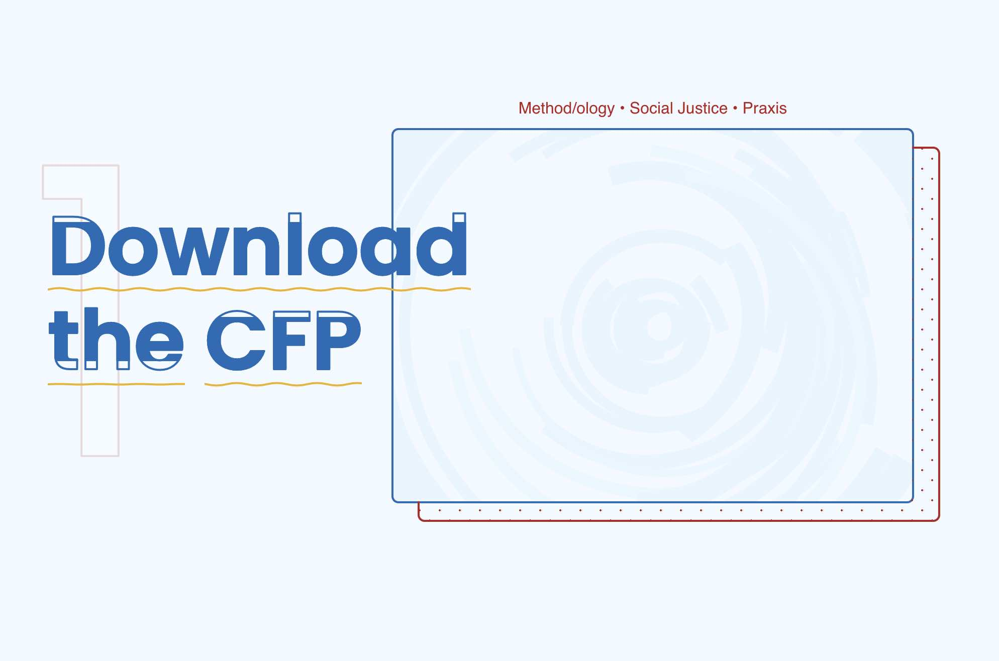
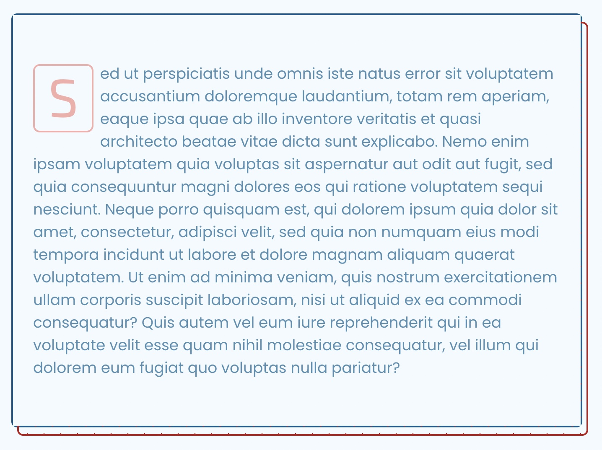
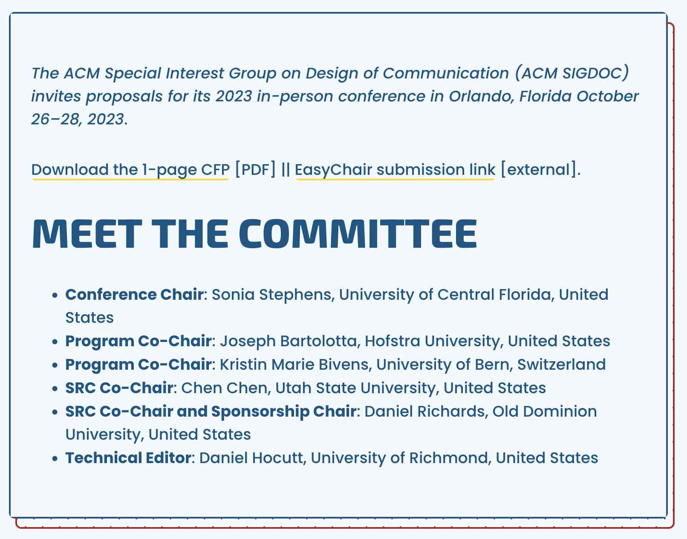

Custom SIGDOC Gutenberg Content Blocks
Use this page as a reference for onboarding any content creators for the SIGDOC conference site. These custom Gutenberg blocks, each of which have their own content model, are meant to make the design of the content consistent across the pages.
How to find the blocks? When in the WP editor page, you can use the Block Title to search for the blocks.
Landing Cards for the Home Page
| Registered Name |
sigcon-landing-cards |
| Block Title |
SIGDOC Conference Animated CTA Cards |
| Page(s) |
Home Page |
| Purpose |
Create easily recognizable sections by which to represent the sequential and recurrent CTAs of conference attendees: 1. Read the CFP, 2. Decide which proposal, ... |
| Features |
ARIA landmark label for accessibility; Bold heading; Stylized list; Toggles from left to right alignment to create a 'pathway'; Subtle image embedded in card; Large spacing |
| Example |
 |
Featured paragraph with dropped-case style for the first-letter
| Registered Name |
sigcon-page-card-paragraph-feature |
| Block Title |
SIGDOC Feature Card with Custom Text Effects |
| Page(s) |
Any |
| Purpose |
Use when you need a featured paragraph. |
| Features |
ARIA landmark label for accessibility; Embedded in card; large spacing; first letter dropped-case styling |
| Example |
 |
Prefatory paragraph
| Registered Name |
sigcon-page-intro-card |
| Block Title |
SIGDOC Conference Introductory Card for a Page |
| Page(s) |
Any |
| Purpose |
Use when you need a featured paragraph. |
| Features |
ARIA landmark label for accessibility; Embedded in card; large spacing; first letter dropped-case styling |
| Example |
 |